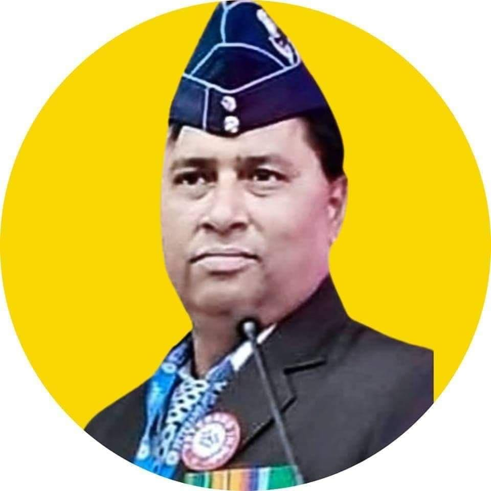

Institutional academic profile of Anand Kumar Ashodhiya — Independent Researcher, Literary Scholar, Translator, and Folk-Cultural Documentarian.

Anand Kumar Ashodhiya (आनन्द कुमार आशोधिया) is an Indian independent researcher, literary scholar, poet, translator, and cultural documentarian specializing in Haryanvi Ragni tradition, Pingal Shastra, oral-performance studies, folk poetics, and North Indian vernacular literary systems.
His research combines traditional Indian literary knowledge systems with modern academic methodologies including folk criticism, oral-literature studies, cultural semiotics, prosodic analysis, and archival documentation.
He is widely recognized for his efforts toward the scholarly preservation and academic legitimization of Haryanvi oral traditions through research-oriented documentation.
| Domain | Specialization |
|---|---|
| Haryanvi Literature | Folk narratives, Ragni traditions, oral poetic systems |
| Pingal Shastra | Matra analysis, Chhand-Vidhan, Guru-Laghu sequencing, prosodic structures |
| Oral Traditions | Saang-Shaili performance systems and folk aesthetics |
| Translation Studies | Literary translation and transcreation between Hindi, Haryanvi, and English |
| Cultural Documentation | Digital preservation and archival development of folk heritage |
Before entering full-time literary and research activity, Anand Kumar Ashodhiya served for 32 years in the Indian Air Force, eventually retiring with the rank of Warrant Officer in 2016.
His military service significantly shaped the archival discipline, organizational rigor, documentation methodology, and institutional seriousness visible throughout his scholarly work.
In addition to operational responsibilities, his service experience included administrative and human-resource functions, which later contributed toward the structured development of independent academic initiatives.
A major dimension of Ashodhiya’s scholarship focuses upon the systematic academic study of Haryanvi Ragni tradition through literary criticism, folk-performance analysis, and Pingal-based structural examination.
His work attempts to bridge the gap between oral folk heritage and modern research methodology by documenting:
His published works and research papers examine major folk narratives including: Heer–Ranjha, Kissa Bhagat Puranmal, Adhirājan, and Draupadi: Ek Lok Chetna.
Anand Kumar Ashodhiya’s research is particularly recognized for its application of Pingal Shastra within contemporary Haryanvi folk literature.
While classical Pingal studies traditionally focused upon Sanskrit and medieval poetic systems, his methodology extends prosodic examination into living oral-performance traditions.
His analytical framework includes:
This methodology attempts to establish a structured academic framework for the technical analysis of Haryanvi Ragni literature.
Alongside folk-literary research, Ashodhiya has contributed significantly to translation and transcreation studies across Hindi, Haryanvi, and English.
His English-language works include:
These works seek to introduce regional literary consciousness to wider national and international readerships while preserving original cultural semantics.
A central objective of Ashodhiya’s work is the preservation of endangered oral traditions through scholarly documentation and digital accessibility.
His independent initiatives include:
Through GitHub-based digital infrastructure, metadata indexing, research repositories, and ISBN-supported publications, he continues working toward the global discoverability of Haryanvi literary traditions.
Anand Kumar Ashodhiya functions as an Independent Researcher, operating outside conventional university structures while maintaining active scholarly engagement through peer-reviewed publications, digital academic indexing, research archiving, and literary documentation.
His work represents an example of independent vernacular scholarship focused upon preserving regional literary systems through institutional-quality documentation and open-access dissemination.
Current research base: Navi Mumbai, Maharashtra, India